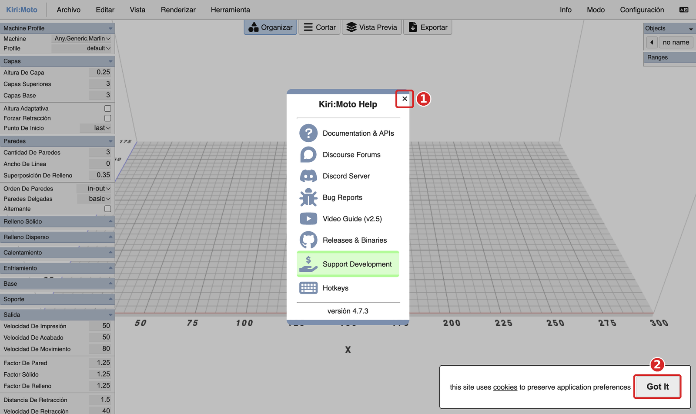
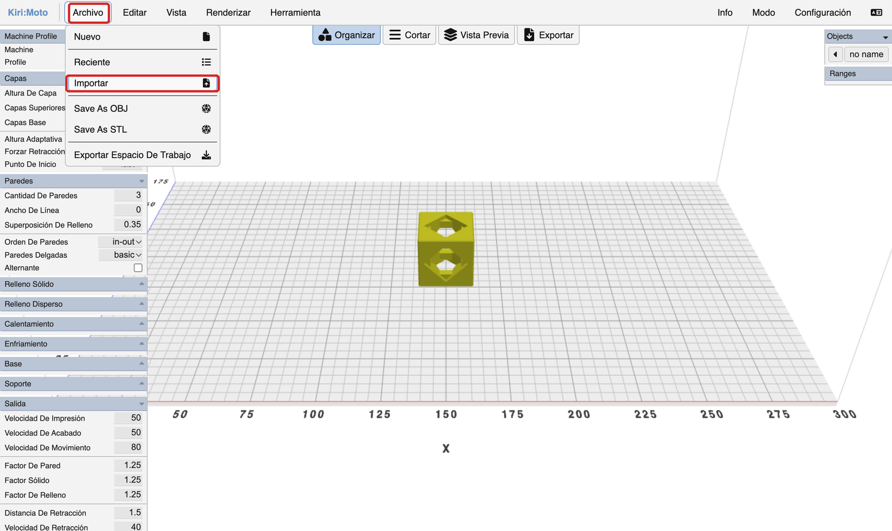
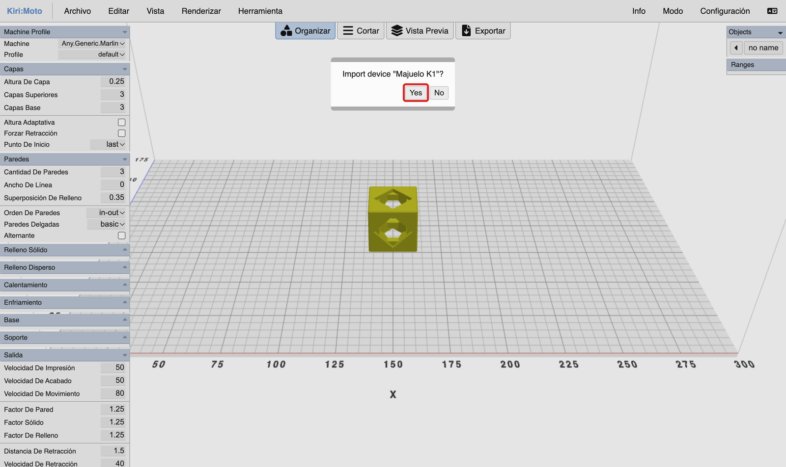
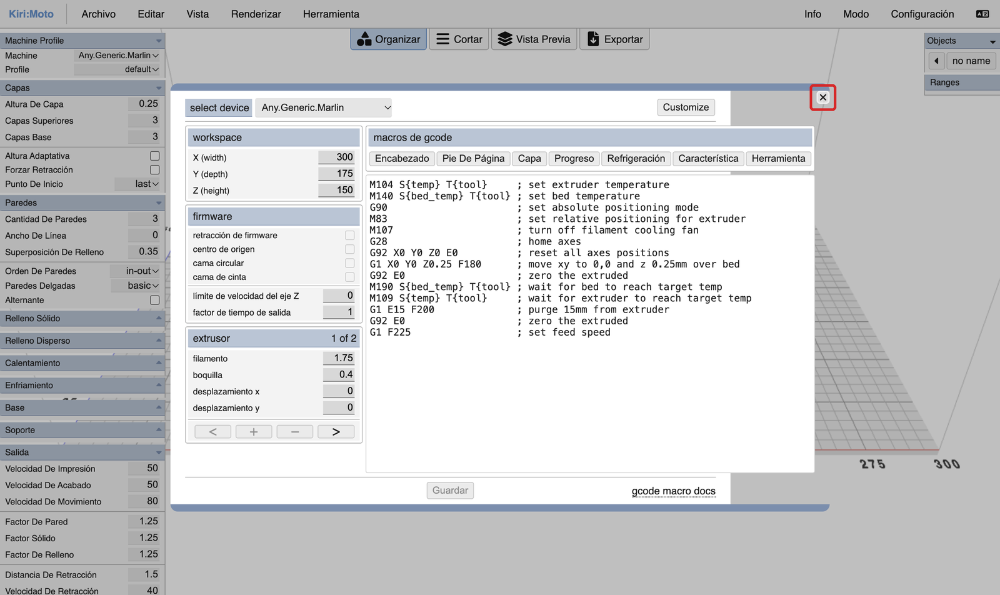
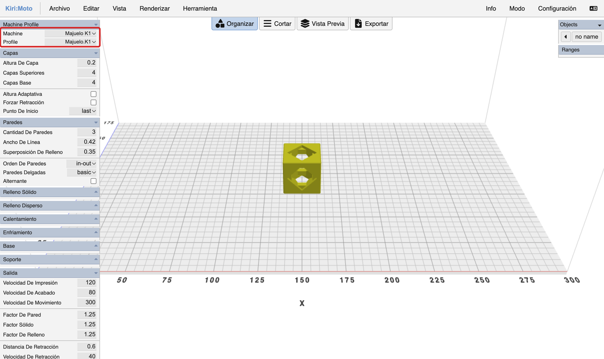
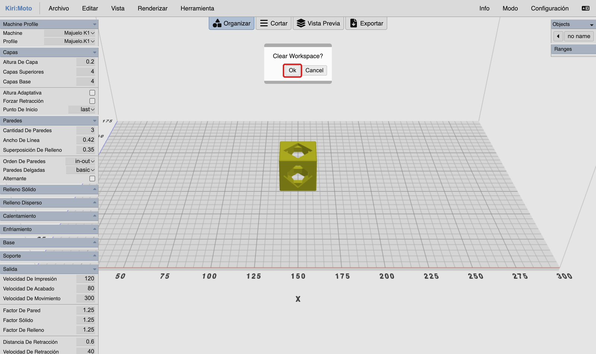
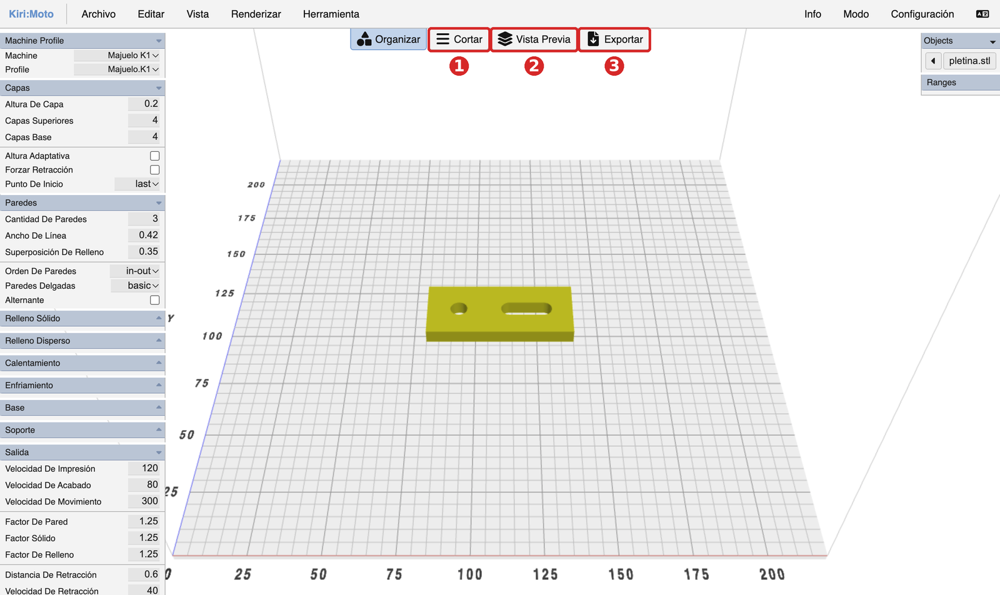
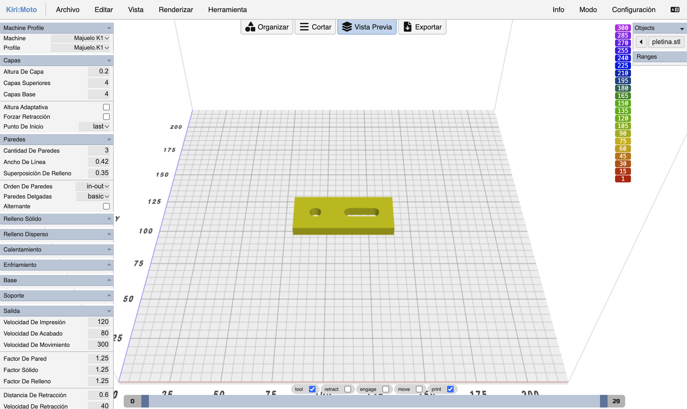
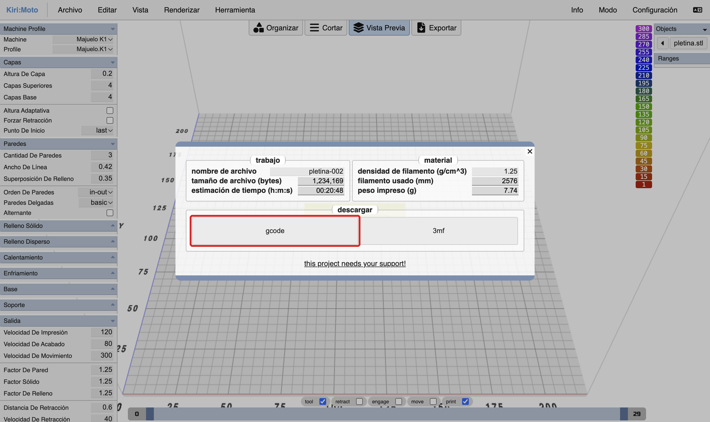

Para qué sirve esta ficha
Las impresoras 3D del taller son dos Creality K1. Para imprimir una pieza no basta con tener el diseño: hay que pasarlo por un laminador, el programa que corta la pieza en capas y escribe las instrucciones que seguirá la impresora. Nosotros usamos Kiri:Moto, que funciona en el navegador y no hay que instalar.
Kiri:Moto no sabe cómo son nuestras impresoras hasta que se lo dices. Para eso existe el perfil del centro: un archivo pequeño que le explica el tamaño de la bandeja, las temperaturas y, sobre todo, cómo tiene que arrancar la K1. Si laminas sin ese perfil, el archivo parece correcto, pero la impresora deja de echar plástico a los pocos minutos y la pieza se queda a medias.
Hazlo al empezar cada sesión
El perfil se guarda en el navegador del ordenador en el que estás, y los ordenadores del aula vuelven a su estado inicial cada vez que se apagan. Por eso tienes que repetir los pasos 1, 2 y 3 cada día que vayas a laminar. Son un par de minutos.
Lo que trae el perfil del centro
No tienes que escribir estos valores: se colocan solos al elegir el perfil. Te sirven para comprobar que todo está en su sitio y para volver a ponerlos si los cambias.
| Ajuste | Valor del perfil |
|---|---|
| Bandeja de la K1 | 220 × 220 mm, y hasta 250 mm de altura |
| Boquilla y filamento | 0.4 mm y PLA de 1.75 mm |
| Altura De Capa | 0.2 |
| Capas Superiores y Capas Base | 4 y 4 |
| Cantidad De Paredes | 3 |
| Cantidad De Relleno (al desplegar «Relleno Disperso») | 0.2, es decir, un 20 % |
| Temperaturas | 220 °C en la boquilla y 60 °C en la cama |
1. Abre Kiri:Moto
Abre el navegador y entra en grid.space/kiri. No hay que instalar nada ni crear ninguna cuenta.
En un ordenador recién encendido aparecen dos cosas que no necesitas:
- Una ventana de ayuda en el centro («Kiri:Moto Help»). Ciérrala con la × de su esquina o con la tecla Esc.
- Un aviso de cookies abajo a la derecha. Se quita con el botón Got It.

Mira la pestaña del navegador: tiene que poner «Kiri:Moto | FDM». FDM es la impresión con filamento, que es la nuestra. Si pusiera otra cosa, abre el menú Modo (arriba a la derecha) y elige FDM.
2. Importa el perfil del centro
Descarga el perfil
Descargar kirimoto_majuelo_k1.km
El navegador lo guarda en la carpeta Descargas. Es un archivo muy pequeño y no se abre con doble clic: solo sirve para dárselo a Kiri:Moto.
- En Kiri:Moto, abre el menú Archivo y pulsa Importar.

Archivo → Importar. Ampliar captura (nueva pestaña). - Se abre el explorador de archivos. Entra en Descargas, elige kirimoto_majuelo_k1.km y pulsa Abrir. También vale arrastrar el archivo desde la carpeta hasta la ventana de Kiri:Moto.
- Kiri:Moto pregunta, en inglés, si quieres importar el dispositivo «Majuelo K1». Pulsa Yes.

La pregunta que hace Kiri:Moto al importar el perfil. Ampliar captura (nueva pestaña). - Después se abre una ventana grande con los datos de la máquina. No toques nada en ella: ciérrala con la × de arriba a la derecha.

Esta ventana se cierra sin cambiar nada. Ampliar captura (nueva pestaña).
Con esto el perfil ya está dentro de Kiri:Moto, pero todavía no está elegido. Eso se hace en el paso siguiente, y es el que más se olvida.
3. Elige la máquina y el perfil
Mira arriba del todo en el panel de la izquierda, donde pone Machine Profile. Hay dos listas desplegables:
- En Machine elige Majuelo K1. Está al principio de la lista, bajo el rótulo «My Devices».
- En Profile tiene que poner Majuelo.K1. Normalmente se coloca solo al elegir la máquina; si no, elígelo tú.

Cuidado con los nombres parecidos
En la lista de máquinas hay también una que se llama Creality.K1. Viene de serie con Kiri:Moto y no es la nuestra: con ella la impresora falla igual que sin perfil. La del taller es Majuelo K1.
4. Carga tu pieza y genera el archivo de impresión
- Vacía la bandeja. En un ordenador recién encendido Kiri:Moto coloca un cubo de muestra. Si lo dejas, se imprimirá junto a tu pieza. Abre Archivo, pulsa Nuevo y, cuando pregunte «Clear Workspace?», pulsa Ok.

Archivo → Nuevo quita el cubo de muestra. Ampliar captura (nueva pestaña). - Carga tu pieza. Otra vez Archivo → Importar, y ahora elige tu archivo STL. La pieza aparece sobre la bandeja. Comprueba que cabe entera y que está apoyada por su cara más plana.
- Lamina. Pulsa los botones de arriba en este orden: Cortar (el programa calcula las capas; espera a que termine), Vista Previa (te enseña el recorrido de la impresora; mueve el deslizador de abajo para ver las capas una a una) y Exportar.

La pieza cargada y los tres botones, en el orden en que se pulsan. Ampliar captura (nueva pestaña). 
La vista previa. El deslizador de abajo recorre las capas. Ampliar captura (nueva pestaña). - Descarga el archivo. Al pulsar Exportar se abre una ventana con el tiempo que tardará la impresión y los gramos de plástico que gastará: anótalos. Pulsa el botón gcode. El navegador guarda en Descargas un archivo que termina en .gcode.

La ventana de exportación. El botón que hay que pulsar es «gcode». Ampliar captura (nueva pestaña). - Cópialo a tu pendrive. Lo que se queda en Descargas se pierde al apagar el ordenador. Antes de llevarlo a la impresora, haz la comprobación del paso 5.
5. Comprueba el archivo antes de imprimir
Este paso es obligatorio. Tarda medio minuto y evita perder una hora de impresión y el plástico de una pieza que saldría mal.
- Abre el archivo .gcode con el editor de texto: clic derecho sobre el archivo, «Abrir con» y elige el editor de texto (en los ordenadores del aula se llama Pluma). Verás un texto muy largo: son las instrucciones para la impresora, una por línea.
- Las primeras líneas, casi cien, empiezan por punto y coma. Son anotaciones y la impresora no las lee. No busques a ojo: pulsa Ctrl + F y escribe START_PRINT.
- Tienes que encontrar esta línea y, justo debajo, una que dice M83:
M140 S0 M104 S0 START_PRINT EXTRUDER_TEMP=220 BED_TEMP=60 M83 G92 E0
Qué haces según lo que encuentres
- Están las dos líneas, una debajo de la otra: el archivo es bueno. Llévalo a la impresora.
- Falta alguna de las dos, o el buscador no encuentra START_PRINT: ese archivo no se imprime. Se ha laminado sin el perfil del centro. Vuelve al paso 2, comprueba el paso 3 y lamina de nuevo.
Por qué importan esas dos líneas. START_PRINT pone en marcha la K1: calienta la boquilla a 220 °C y la cama a 60 °C y prepara la impresora. M83 le dice cómo tiene que contar el plástico que empuja. Sin esa orden la K1 lo cuenta de otra manera, y por eso deja de echar plástico al poco de empezar.
Si algo no sale
Al pulsar Cortar no aparece nada
Recarga la página con F5. Después comprueba otra vez el paso 3 (Machine y Profile) y vuelve a cargar tu pieza.
El corte sale vacío después de cambiar un número
En Kiri:Moto los decimales se escriben con punto, no con coma: 0.2, no 0,2. Si escribes una coma, el programa se queda con un 0 y no hay nada que cortar. Corrige el número, pulsa Intro para que se guarde y pulsa Cortar otra vez.
Un número del panel no se deja cambiar
Los ajustes solo se pueden cambiar en la vista Organizar, no en la Vista Previa. Pulsa Organizar, cambia el número y termina con Intro.
He cambiado ajustes para hacer pruebas
Los cambios que haces a mano (capas, paredes, relleno…) se quedan guardados, y volver a importar el perfil no los deshace. Antes de exportar un archivo para imprimir, compara el panel de la izquierda con la tabla del principio de esta ficha y vuelve a escribir los valores que hayas cambiado, salvo que tu profesor te haya pedido otros.
En Machine no aparece «Majuelo K1»
El perfil no está importado en este ordenador. Repite el paso 2.
La pieza no cabe en la bandeja
La K1 imprime piezas de hasta 220 × 220 mm de base y 250 mm de altura. Si la tuya es mayor, hay que hacerla más pequeña o partirla en el programa de diseño.